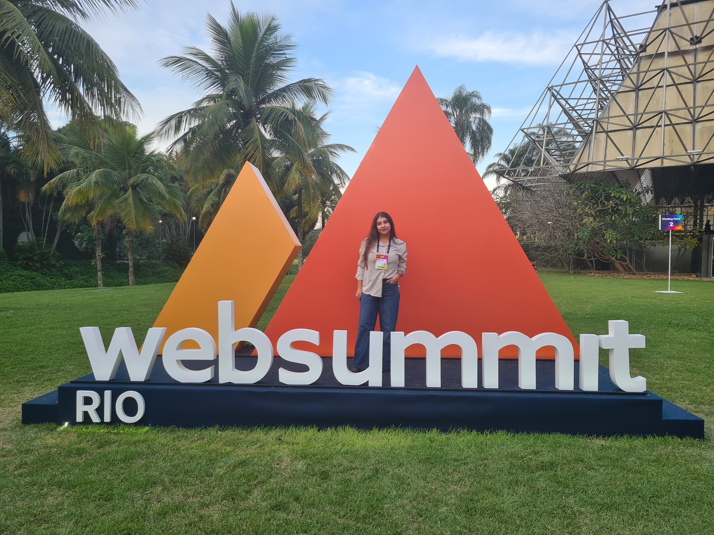

>_ DETALHES_DO_PROJETO.EXE
📁
Desenvolvimento de Software
Inteligência Artificial Aplicada
Criadora de Conteúdo Tech
@malu.codes
Sou graduanda em Ciência da Computação e Inteligência Artificial Aplicada, com foco no desenvolvimento de software e IA.
Me considero uma pessoa detalhista, comunicativa e colaborativa. Acredito firmemente que ensinar é a melhor forma de aprender, e levo essa filosofia para minha comunidade.
Principais Stacks

Developer & Creator
@malu.codes
LAICT (UVA) · NOV 2025 — PRESENTE
Estruturação de operações internas e logística de eventos acadêmicos. Liderança de equipes voluntárias e implementação de governança.
eventos e palestras entregues no prazo na LAICT
participantes alcançados nos eventos
palestras facilitadas no Unidas Girl Up
seguidores orgânicos como criadora tech
ABERTA A CONEXÕES
Ciência da Computação & IA
GITHUB
github.com/malucodesTIKTOK
@malu.codessMEDIUM
medium.com/@malu.codes